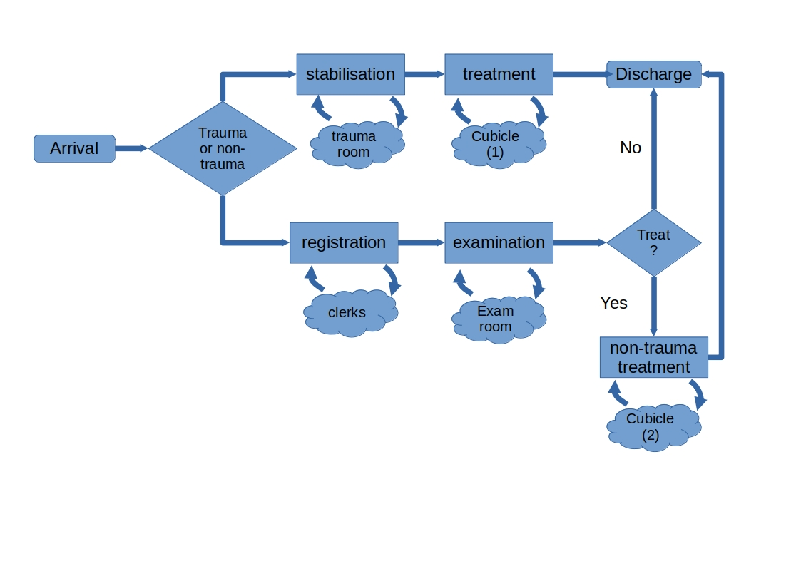

simpy treatment centre model#
In this exercise you will learn how to set up and use an existing simulation model. The modelling framework has been setup with a Scenario class for parameterisation and a multiple_replications() wrapper function for running the model and returning results.
1. Problem description#
FirstTreatment: A health clinic based in the US. This example is based on exercise 13 from Nelson (2013) page 170.
Nelson. B.L. (2013). Foundations and methods of stochastic simulation. Springer.
Patients arrive to the health clinic between 6am and 12am following a non-stationary poisson process. After 12am arriving patients are diverted elsewhere and remaining WIP is completed. On arrival, all patients quickly sign-in and are triaged.
The health clinic expects two types of patient arrivals:
Trauma arrivals:
patients with severe illness and trauma that must first be stabilised in a trauma room.
these patients then undergo treatment in a cubicle before being discharged.
Non-trauma arrivals
patients with minor illness and no trauma go through registration and examination activities
a proportion of non-trauma patients require treatment in a cubicle before being discharged.
In this model treatment of trauma and non-trauma patients is modelled separately.

2. Imports#
The model has been setup as a python package and deployed to pypi: https://pypi.org/project/treat-sim/. It has been pip installed as part of the provided sim conda virtual environment.
The Scenario class and multiple_replications functions are contained in the treat_sim.model module.
An description of all model code is provided in an online Jupyter book: https://bit.ly/treat_sim
Let’s check the version of treat_sim we have installed
import treat_sim
treat_sim.__version__
'1.0.0'
from treat_sim.model import Scenario, multiple_replications
# we will also import pandas
import pandas as pd
3. Example: creating a default scenario#
default_scenario = Scenario()
# let's have a look at some of the default parameters
default_scenario.n_triage
default_scenario.n_exam
3
4. Example creating an alternative scenario#
There are many variables available to update in this model. Some examples are:
n_triage = number of triage bays
n_exam = number of examination rooms
n_cubicles_1 = number of non trauma treatment rooms
exam_mean = mean duration of an examination
From version 1.0.0 of
treat_simthese are updated via the constructor as follows:
# by default there is 1 triage room
# set parameters through the consutuctor methods as follows
extra_triage = Scenario(n_triage=2)
extra_triage.n_triage
2
4. Running a scenario using the wrapper method#
by default the replications function runs the model 5 times. You can alter this using the n_reps parameter
results = multiple_replications(default_scenario, n_reps=10)
The variable results is a pandas.DataFrame containing key performance indicators (columns) and replications (rows)
results
| 00_arrivals | 01a_triage_wait | 01b_triage_util | 02a_registration_wait | 02b_registration_util | 03a_examination_wait | 03b_examination_util | 04a_treatment_wait(non_trauma) | 04b_treatment_util(non_trauma) | 05_total_time(non-trauma) | 06a_trauma_wait | 06b_trauma_util | 07a_treatment_wait(trauma) | 07b_treatment_util(trauma) | 08_total_time(trauma) | 09_throughput | |
|---|---|---|---|---|---|---|---|---|---|---|---|---|---|---|---|---|
| rep | ||||||||||||||||
| 1 | 218.0 | 28.009290 | 0.542454 | 128.490438 | 0.854615 | 28.478642 | 0.847430 | 145.414321 | 0.853189 | 247.872229 | 8.595360 | 0.368908 | 214.198331 | 0.976808 | 399.200311 | 154.0 |
| 2 | 188.0 | 3.240469 | 0.475390 | 63.307540 | 0.749027 | 16.328179 | 0.795921 | 134.202786 | 0.846795 | 178.799154 | 65.146932 | 0.838521 | 231.603567 | 0.778634 | 392.064964 | 139.0 |
| 3 | 233.0 | 13.040936 | 0.528681 | 149.636381 | 0.839994 | 18.400280 | 0.847310 | 169.503295 | 0.827088 | 260.804457 | 78.130137 | 0.816547 | 251.835736 | 1.188287 | 369.276920 | 157.0 |
| 4 | 236.0 | 29.246780 | 0.623225 | 91.137899 | 0.876762 | 35.424440 | 0.881140 | 125.016255 | 0.858299 | 206.945928 | 225.471749 | 0.876984 | 95.601572 | 1.193115 | 385.752794 | 159.0 |
| 5 | 246.0 | 65.407658 | 0.647235 | 130.091608 | 0.827194 | 36.254401 | 0.824874 | 150.890149 | 0.840913 | 288.796547 | 168.014088 | 0.979189 | 13.244608 | 0.650671 | 339.817753 | 148.0 |
| 6 | 215.0 | 67.536960 | 0.617639 | 87.101852 | 0.807856 | 24.149025 | 0.810646 | 95.628440 | 0.841574 | 226.294148 | 82.263601 | 0.842665 | 207.090105 | 0.771464 | 418.710896 | 151.0 |
| 7 | 199.0 | 16.388866 | 0.479730 | 90.818931 | 0.764699 | 30.028974 | 0.812242 | 119.295530 | 0.785988 | 211.711285 | 70.318603 | 0.810452 | 295.851506 | 0.880920 | 462.818608 | 149.0 |
| 8 | 240.0 | 36.702969 | 0.676470 | 126.444397 | 0.860978 | 31.189935 | 0.866354 | 169.368888 | 0.858340 | 268.655456 | 152.750616 | 0.801632 | 171.917036 | 0.602400 | 433.502223 | 154.0 |
| 9 | 238.0 | 38.201228 | 0.595762 | 96.503846 | 0.878944 | 29.642379 | 0.887559 | 169.737929 | 0.898665 | 247.619831 | 68.075461 | 0.698513 | 307.067085 | 0.952312 | 477.145587 | 145.0 |
| 10 | 226.0 | 54.951247 | 0.652863 | 106.388692 | 0.845639 | 25.374935 | 0.846628 | 136.911866 | 0.900255 | 264.451897 | 85.030588 | 0.834798 | 210.969768 | 0.797586 | 503.115035 | 159.0 |
we can summarise results using the dataframe’s describe() method. The results are transposed to improve readability.
results.describe().T
| count | mean | std | min | 25% | 50% | 75% | max | |
|---|---|---|---|---|---|---|---|---|
| 00_arrivals | 10.0 | 223.900000 | 18.864723 | 188.000000 | 215.750000 | 229.500000 | 237.500000 | 246.000000 |
| 01a_triage_wait | 10.0 | 35.272640 | 21.891014 | 3.240469 | 19.293972 | 32.974874 | 50.763742 | 67.536960 |
| 01b_triage_util | 10.0 | 0.583945 | 0.072690 | 0.475390 | 0.532124 | 0.606701 | 0.641233 | 0.676470 |
| 02a_registration_wait | 10.0 | 106.992158 | 26.076703 | 63.307540 | 90.898673 | 101.446269 | 127.978928 | 149.636381 |
| 02b_registration_util | 10.0 | 0.830571 | 0.044482 | 0.749027 | 0.812690 | 0.842816 | 0.859387 | 0.878944 |
| 03a_examination_wait | 10.0 | 27.527119 | 6.568842 | 16.328179 | 24.455503 | 29.060511 | 30.899695 | 36.254401 |
| 03b_examination_util | 10.0 | 0.842010 | 0.030849 | 0.795921 | 0.815400 | 0.846969 | 0.861623 | 0.887559 |
| 04a_treatment_wait(non_trauma) | 10.0 | 141.596946 | 24.505998 | 95.628440 | 127.312888 | 141.163093 | 164.749203 | 169.737929 |
| 04b_treatment_util(non_trauma) | 10.0 | 0.851111 | 0.033026 | 0.785988 | 0.841078 | 0.849992 | 0.858330 | 0.900255 |
| 05_total_time(non-trauma) | 10.0 | 240.195093 | 33.630061 | 178.799154 | 215.357001 | 247.746030 | 263.540037 | 288.796547 |
| 06a_trauma_wait | 10.0 | 100.379713 | 62.925813 | 8.595360 | 68.636246 | 80.196869 | 135.820609 | 225.471749 |
| 06b_trauma_util | 10.0 | 0.786821 | 0.162391 | 0.368908 | 0.803837 | 0.825673 | 0.841629 | 0.979189 |
| 07a_treatment_wait(trauma) | 10.0 | 199.937931 | 88.990650 | 13.244608 | 180.710303 | 212.584049 | 246.777694 | 307.067085 |
| 07b_treatment_util(trauma) | 10.0 | 0.879220 | 0.201709 | 0.602400 | 0.773256 | 0.839253 | 0.970684 | 1.193115 |
| 08_total_time(trauma) | 10.0 | 418.140509 | 51.147329 | 339.817753 | 387.330837 | 408.955603 | 455.489512 | 503.115035 |
| 09_throughput | 10.0 | 151.500000 | 6.433420 | 139.000000 | 148.250000 | 152.500000 | 156.250000 | 159.000000 |
5. Exercise#
Try running the following scenarios
extra triage capacity - increase triage bays to 2
extra examination capacity = increase examination rooms to 2
swap over 1 exam room for extra triage bay
Extra challenge:
Create a function called
get_scenarios()that creates all of the function in one go and returns them to the calling code. Can you then loop through the scenarios and execute them in one after another?One option is to setup the function so that it creates a python dictionary that has the name of the scenario as a key and the
Scenarioobject as a value.Can you combine the results into a single table?
# example answer that includes extra challenges.
def get_scenarios():
'''
Creates a dictionary object containing
objects of type `Scenario` to run.
Returns:
--------
dict
Contains the scenarios for the model
'''
scenarios = {}
scenarios['base'] = Scenario()
# extra triage capacity
scenarios['triage+1'] = Scenario(scenarios['base'].n_triage+1)
# extra examination capacity
scenarios['exam+1'] = Scenario(scenarios['base'].n_exam+1)
# swap over 1 exam room for extra triage cubicle
scenarios['swap_exam_triage'] = Scenario(scenarios['base'].n_triage+1,
scenarios['base'].n_exam-1)
return scenarios
def run_scenario_analysis(scenarios, n_reps):
'''
Run each of the scenarios for a specified results
collection period and replications.
Params:
------
scenarios: dict
dictionary of Scenario objects
n_rep: int
Number of replications
'''
print('Scenario Analysis')
print(f'No. Scenario: {len(scenarios)}')
print(f'Replications: {n_reps}')
scenario_results = {}
for sc_name, scenario in scenarios.items():
print(f'Running {sc_name}', end=' => ')
replications = multiple_replications(scenario, n_reps=n_reps)
print('done.\n')
#save the results
scenario_results[sc_name] = replications
print('Scenario analysis complete.')
return scenario_results
def scenario_summary_frame(scenario_results):
'''
Mean results for each performance measure by scenario
Parameters:
----------
scenario_results: dict
dictionary of replications.
Key identifies the performance measure
Returns:
-------
pd.DataFrame
'''
columns = []
summary = pd.DataFrame()
for sc_name, replications in scenario_results.items():
summary = pd.concat([summary, replications.mean()], axis=1)
columns.append(sc_name)
summary.columns = columns
return summary
# run the analysis!
scenario_results = run_scenario_analysis(get_scenarios(), 10)
scenario_summary_frame(scenario_results)
Scenario Analysis
No. Scenario: 4
Replications: 10
Running base =>
done.
Running triage+1 =>
done.
Running exam+1 =>
done.
Running swap_exam_triage =>
done.
Scenario analysis complete.
| base | triage+1 | exam+1 | swap_exam_triage | |
|---|---|---|---|---|
| 00_arrivals | 223.900000 | 223.900000 | 223.900000 | 223.900000 |
| 01a_triage_wait | 35.272640 | 35.272640 | 35.272640 | 1.591082 |
| 01b_triage_util | 0.583945 | 0.583945 | 0.583945 | 0.291972 |
| 02a_registration_wait | 106.992158 | 106.992158 | 106.992158 | 136.547677 |
| 02b_registration_util | 0.830571 | 0.830571 | 0.830571 | 0.837294 |
| 03a_examination_wait | 27.527119 | 27.527119 | 27.527119 | 28.238646 |
| 03b_examination_util | 0.842010 | 0.842010 | 0.842010 | 0.844921 |
| 04a_treatment_wait(non_trauma) | 141.596946 | 141.596946 | 141.596946 | 145.386882 |
| 04b_treatment_util(non_trauma) | 0.851111 | 0.851111 | 0.851111 | 0.852151 |
| 05_total_time(non-trauma) | 240.195093 | 240.195093 | 240.195093 | 237.010351 |
| 06a_trauma_wait | 100.379713 | 100.379713 | 100.379713 | 123.372108 |
| 06b_trauma_util | 0.786821 | 0.786821 | 0.786821 | 0.786666 |
| 07a_treatment_wait(trauma) | 199.937931 | 199.937931 | 199.937931 | 233.482451 |
| 07b_treatment_util(trauma) | 0.879220 | 0.879220 | 0.879220 | 0.899172 |
| 08_total_time(trauma) | 418.140509 | 418.140509 | 418.140509 | 430.158680 |
| 09_throughput | 151.500000 | 151.500000 | 151.500000 | 151.400000 |